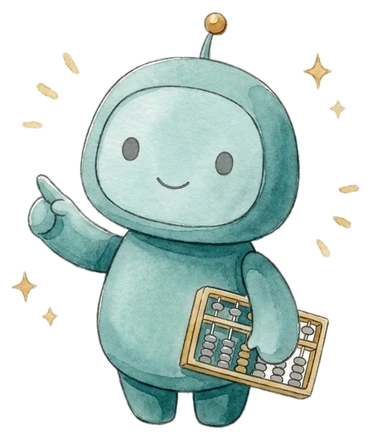
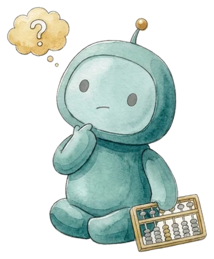
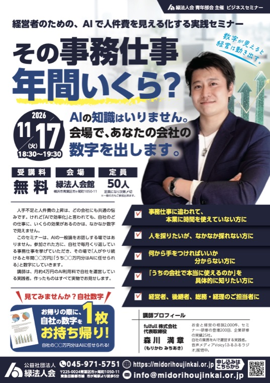

サイバーシルクロード八王子 小松 雄貴 様
2026年11月5日 fulfull株式会社 森川 満章
会員企業の「毎月の事務」を、
AIが進める2時間
会員企業向けセミナーの、中身と進め方です。

1まず5分だけ、見てください
創業支援の1件を、最初の依頼から会議所への報告まで、AIと一緒に回した記録です。
小松さんの窓口でいつも見ている、あの流れです。
依頼 → 日程 → 最初のメール → 初回資料 → 相談 → 議事録・資料・送付文 → 2回目・3回目 → 最後のアドバイスと報告。
実際の1件です（お名前は伏せています）。
前
1回
1.5〜2時間
今
実質
2分
人がやるのは「相談そのもの」「読む」「送る」の3つだけです。
2今朝も、こう動いています
講師の会社の、ある朝の実物です。
5時37分から7時30分まで、人は何もしていません。
記事を書く → SNSの下書き → 記事を公開 → 朝の便りを届ける（30秒・音楽つき）。
3会員企業が、当日持ち帰るもの
- 自社で「最初にAIに渡す仕事」が1つ決まり、その指示書が手元に残る
- 「答えるAI」と「作業を進めるAI」の違いが分かり、社内で説明できる
- 当日動かした手順と、始め方のページ
持ち帰り：自社用の「AIに渡す指示書」1枚＋助成金の要点1枚
AIのアカウントは不要です。
2時間・15名・PC持参で、11月19日の会と同じ形です。
4御会にとって、うれしいこと

11月19日に参加された会員から「その次は？」と聞かれたときに、ご案内できる1回になります。

告知文・チラシのたたき台・申込の項目・当日資料・事後の手順ページまで、こちらで用意します。
参加者は自社の指示書を1枚持ち帰ります。
アンケートに具体的な声が残ります。

都と国の助成金の締切前に開けるので、会員企業にとって「いま聞く理由」がはっきりします。
5いま、同じ型で動いているもの
- 10月下旬〜 経営コンサルティング会社の経理・事務担当の方へ、Claude Codeの研修（2時間×4回）
- 11月17日 緑法人会 経営者向けセミナー（定員50名）
- 12月 足柄上商工会 経営者向け勉強会 全3回
- 八王子商工会議所 ビジネスお助け隊 役員／本気の創業塾 講師

11月17日 緑法人会（青年部会主催）のチラシです。
登壇・研修の実績で、各団体が本セミナーを推奨するものではありません。
6今日、決めたいこと（3つだけ）
1候補日
2027年1月下旬〜2月の平日14〜16時を軸に。
御会のご都合を優先します。
2会場と定員
御会の会議室、または東京たま未来メッセ。
定員は15名を考えています。
3告知の形
会員メール1〜2回を、開催の約5週間前に。
告知文とチラシのたたき台は、こちらで用意します。
講師料は御会の規定に準じます。
無償でも構いません。
7お約束
- セミナーの中で、販売や勧誘はしません
- 保険・金融商品の話はしません（AIによる事務の自動化に限ります）
- 効果を保証する言い方はしません
- 助成金は制度の紹介までです
会員企業の皆さまに、
次の一歩を。
fulfull株式会社 森川 満章
fulfull0605@gmail.com